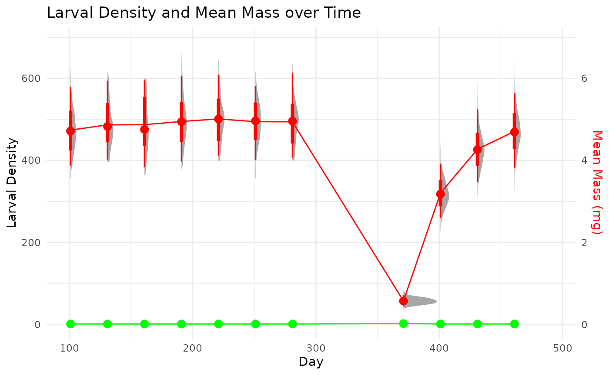

Simulating the sampling of populations
Source:vignettes/articles/sampling-simulation.Rmd
sampling-simulation.RmdPurpose
This document outlines the process for simulating the sampling of populations for developing and testing models of secondary production. These processes were used to simulate data for the examples used in the model tutorials.
Simulation process
The data generation process for each data set is based on a simulated grid based on a number of parameters that control the sampling area, distribution of individuals, growth and mortality parameters of the populations, etc. (Table 1).
| Parameters | Description |
|---|---|
| grid_size | The grid dimension of the ‘x’ and ‘y’ direction. Total grid cells is |
| mu_N_init | The mean initial density of the grid cells. Values are randomly drawn from a |
| sigma_N_init | The standard deviation of initial density of grid cells. Values are randomly drawn from |
| initial_mass | The initial mass of all individuals. |
| mu_ln | The mean asymptotic mass of von Bertalanffy growth. Values for each individual are randomly draws from . |
| sigma_ln | The standard deviation of asymptotic mass of von Bertalanffy growth. Values for each individual are randomly draws from . |
| mu_z | The mean mortality rate for a negative exponential model. Values for each cell are randomly drawn from . |
| sigma_z | The standard devation in mortality rate for a negative exponential model. Values for each cell are randomly drawn from . |
| cpi_start | The lower end of the cohort production interval. This is used to modify the growth coefficient, , in von Bertalanffy growth. Values for each individual are drawn . |
| cpi_end | The upper end of the cohort production interval.This is used to modify the growth coefficient, , in von Bertalanffy growth. Values for each individual are drawn . |
| days | The number of days to simulate. |
| sample_interval | The interval in days between sampling events. |
| sample_start | The start date (1:days) for the first sampling event. |
| sample_end | The end date (sample_start:days) for the last sampling event. |
| S | The number of sample replicates to take at each sampling event. Samples are chosen without replacement within a sampling event. |
Single cohort
We first simulate a single cohort from the following parameters. The individuals all have the same initial mass. Each individual grows based on a von Bertalanffy growth model with a randomly drawn asymptotic mass, , and the growth coefficient, , is calculated by a randomly drawn lifespan (CPI) determined by user-defined inputs. Once an individual reaches it transitions to an ‘adult’ and is no longer counted in samples. Mortality is governed in each grid cell by a randomly draw death rate, , from a negative exponential model.
# Parameters
grid_size <- 20
mu_N_init <- 500
sigma_N_init <- 100
initial_mass <- 0.0006
mu_ln <- log(5^2 / sqrt(0.5^2 + 5^2)) # mean of ~5 mg in Normal(mu, sigma)
sigma_ln <- sqrt(log(1 + (0.5^2 / 5^2))) #sd of ~0.5mg Normal(mu, sigma)
mu_z <- 0.04
sigma_z <- 0.01
cpi_start <- 290
cpi_end <- 310
days <- 506
sample_interval <- 30
sample_start <- 1
sample_end <- 365
S <- 10 Click below to see the code to simulate a single cohort.
## not run
# Function to initialize a cohort
init_cohort <- function(i, j, start_day) {
N_init <- max(1, round(rnorm(1, mu_N_init, sigma_N_init)))
M_inf <- rlnorm(N_init, meanlog = mu_ln, sdlog = sigma_ln)
k <- log(M_inf / initial_mass) / runif(N_init, cpi_start, cpi_end)
z <- rnorm(1, mu_z, sigma_z)
tibble(
x = i,
y = j,
id = 1:N_init,
mass = initial_mass,
M_inf = M_inf,
k = k,
alive = TRUE,
adult = FALSE,
z = z,
cohort_start = start_day
)
}
# Initialize first cohort on day 1
grid_population <- map2_dfr(rep(1:grid_size, each = grid_size), rep(1:grid_size, times = grid_size), ~init_cohort(.x, .y, 1))
# Daily update function for larval individuals only
update_day <- function(pop, current_day) {
pop %>%
dplyr::filter(alive & !adult) %>%
dplyr::mutate(
time_since_start = current_day - cohort_start,
alive = runif(n()) > z,
mass = M_inf * (1 - exp(-k * time_since_start)),
adult = mass >= M_inf
) %>%
dplyr::filter(alive & !adult) # remove those who died or became adult
}
# Run simulation with second cohort added at day 366
simulation <- vector("list", length = days)
simulation[[1]] <- grid_population
set.seed(1312)
for (d in 2:days) {
updated_pop <- update_day(simulation[[d - 1]], d - 1)
if (d == 366) {
new_cohort <- map2_dfr(rep(1:grid_size, each = grid_size), rep(1:grid_size, times = grid_size), ~init_cohort(.x, .y, 366))
updated_pop <- bind_rows(updated_pop, new_cohort)
}
simulation[[d]] <- updated_pop
}
# Combine for sampling
all_days <- bind_rows(simulation, .id = "day") %>%
dplyr::mutate(day = as.integer(day))
# Sampling protocol (larvae only)
sampling_results <- list()
sampled_cells <- list()
for (t in seq(sample_start, sample_end, by = sample_interval)) {
all_cells <- expand.grid(x = 1:grid_size, y = 1:grid_size)
if (length(sampled_cells) > 0) {
prev_sampled <- bind_rows(sampled_cells)
available_cells <- anti_join(all_cells, prev_sampled, by = c("x", "y"))
} else {
available_cells <- all_cells
}
sampled <- available_cells %>% sample_n(min(S, nrow(available_cells)))
sampled_cells[[length(sampled_cells) + 1]] <- sampled
sampled_data <- all_days %>%
dplyr::filter(day == t) %>%
semi_join(sampled, by = c("x", "y")) %>%
group_by(x, y) %>%
summarise(
larval_density = n(),
mass_distribution = list(mass),
.groups = "drop"
) %>%
dplyr::mutate(day = t)
sampling_results[[length(sampling_results) + 1]] <- sampled_data
}
# Final output
daily_sampling <- bind_rows(sampling_results)A split cohort
This example explore the options to calculate production of a univoltine population when sampling starts in the middle of a cohort and ends by sampling a different cohort. This event may not be ideal, but is very common. We operate under the assumption that the life-history characteristics and environment, generally, are similar among cohorts. This may or may not be an acceptable assumption depending on the specific conditions.
To see the code to produce the simulated data set click below
# Spatial growth and mortality simulation in R
library(dplyr)
library(tidyr)
library(purrr)
library(ggplot2)
library(ggdist)
# Parameters
grid_size <- 20
mu_N_init <- 500
sigma_N_init <- 100
initial_mass <- 0.0006
mu_ln <- log(5^2 / sqrt(0.5^2 + 5^2))
sigma_ln <- sqrt(log(1 + (0.5^2 / 5^2)))
mu_z <- 0.04
sigma_z <- 0.01
cpi_start <- 290
cpi_end <- 310
days <- 506
sample_interval <- 30
sample_start <- 101 # adjustable start day
sample_end <- 465 # adjustable end day
S <- 10 # number of cells to sample per event
# Function to initialize a cohort
init_cohort <- function(i, j, start_day) {
N_init <- max(1, round(rnorm(1, mu_N_init, sigma_N_init)))
M_inf <- rlnorm(N_init, meanlog = mu_ln, sdlog = sigma_ln)
k <- log(M_inf / initial_mass) / runif(N_init, cpi_start, cpi_end)
z <- rnorm(1, mu_z, sigma_z)
tibble(
x = i,
y = j,
id = 1:N_init,
mass = initial_mass,
M_inf = M_inf,
k = k,
alive = TRUE,
adult = FALSE,
z = z,
cohort_start = start_day
)
}
# Initialize first cohort on day 1
set.seed(1312)
grid_population <- map2_dfr(rep(1:grid_size, each = grid_size), rep(1:grid_size, times = grid_size), ~init_cohort(.x, .y, 1))
# Daily update function for larval individuals only
update_day <- function(pop, current_day) {
pop %>%
dplyr::filter(alive & !adult) %>%
dplyr::mutate(
time_since_start = current_day - cohort_start,
alive = runif(n()) > z,
mass = M_inf * (1 - exp(-k * time_since_start)),
adult = mass >= M_inf
) %>%
dplyr::filter(alive & !adult) # remove those who died or became adult
}
# Run simulation with second cohort added at day 366
simulation <- vector("list", length = days)
simulation[[1]] <- grid_population
#set seed to reproduce
for (d in 2:days) {
updated_pop <- update_day(simulation[[d - 1]], d - 1)
if (d == 366) {
new_cohort <- map2_dfr(rep(1:grid_size, each = grid_size), rep(1:grid_size, times = grid_size), ~init_cohort(.x, .y, 366))
updated_pop <- bind_rows(updated_pop, new_cohort)
}
simulation[[d]] <- updated_pop
}
# Combine for sampling
all_days <- bind_rows(simulation, .id = "day") %>%
dplyr::mutate(day = as.integer(day))
# Sampling protocol (larvae only)
sampling_results <- list()
sampled_cells <- list()
for (t in seq(sample_start, sample_end, by = sample_interval)) {
all_cells <- expand.grid(x = 1:grid_size, y = 1:grid_size)
if (length(sampled_cells) > 0) {
prev_sampled <- bind_rows(sampled_cells)
available_cells <- anti_join(all_cells, prev_sampled, by = c("x", "y"))
} else {
available_cells <- all_cells
}
sampled <- available_cells %>% sample_n(min(S, nrow(available_cells)))
sampled_cells[[length(sampled_cells) + 1]] <- sampled
sampled_data <- all_days %>%
dplyr::filter(day == t) %>%
semi_join(sampled, by = c("x", "y")) %>%
group_by(x, y) %>%
summarise(
larvalDensity = n(),
massDistribution = list(mass),
.groups = "drop"
) %>%
dplyr::mutate(day = t)
sampling_results[[length(sampling_results) + 1]] <- sampled_data
}
# Final output
daily_sampling <- bind_rows(sampling_results)Load, summarise, and visualize the simulated sampling data

#> tibble [6,666 × 4] (S3: tbl_df/tbl/data.frame)
#> $ dateID : num [1:6666] 101 101 101 101 101 101 101 101 101 101 ...
#> $ repID : int [1:6666] 1 1 1 1 1 1 1 1 1 1 ...
#> $ n_m2 : int [1:6666] 229 229 229 229 229 229 229 229 229 229 ...
#> $ massValue: num [1:6666] 5.02 4.83 4.83 4.8 5.91 ...
#> [1] "tbl_df" "tbl" "data.frame"
#> # A tibble: 6 × 4
#> dateID repID n_m2 massValue
#> <dbl> <int> <int> <dbl>
#> 1 101 1 229 5.02
#> 2 101 1 229 4.83
#> 3 101 1 229 4.83
#> 4 101 1 229 4.80
#> 5 101 1 229 5.91
#> 6 101 1 229 5.53
#> [1] "agg"
#> [1] "cohorts"
#> [1] "dfOrdered"
#> [1] "optim"
#> [1] "fit out"
#> [1] "t0"
#> [1] "raw_age"
#> [1] "t0"
#> [1] "raw_age"
#> [1] "t0"
#> [1] "raw_age"
#> Error in 1/D: non-numeric argument to binary operator
#> No traceback availableRemapping a split cohort to a single analysis
In order to perform a full cohort analysis on a cohort that is split in time, we can ‘remap’ the two cohorts into a new timescale that follows a consistent cohort progression. We can then calculate production through regular cohort methods. If we need to extract time-specific values, we can simply map the estimates back to the original time scale.
We developed a quick algorithm to automate the determination of the beginning and ends of a non-overlapping cohort.
This function reorders the sampling events to follow a continuous growth progression. This allows for the determination of model-based estimates of cohort production and associated growth statistics and also keeps the information to re-map the production outputs to the original sampling times.